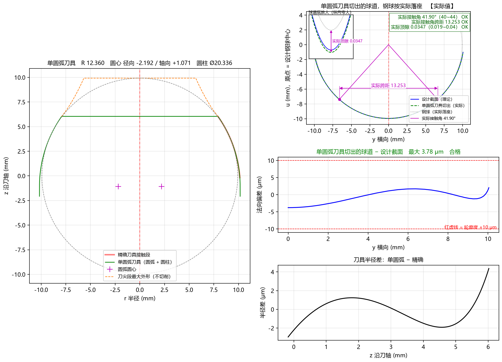

5.6 Tab 6：圆弧近似 (Ctrl+6)
在实际生产中，制造和检测一把“自由曲线成型刀”成本较高，而在数控工具磨床或砂轮修整器上加工单圆弧或多段相切圆弧则非常简便。
圆弧近似 标签页通过左一、右三共 4 个子图，全方位展示圆弧近似刀具（支持 1 段单圆弧与 2~5 段相切圆弧，以及 拟合精确廓形 与 按审核优化 两种单圆弧求法）的磨刀尺寸、切出球道的钢球实际落座状态、球道轮廓度偏差及刀具半径差。

一、四子图布局与各自含义
1. 左图：圆弧近似刀具与精确廓形宏观对比
- 顶部标题栏：直接给出可直接用于磨刀的圆弧尺寸（已按高级参数
取整位数取整）：- 单圆弧时：显示
单圆弧刀具 R 12.360 圆心 径向 -2.192 / 轴向 +1.071 圆柱 Ø20.336； - 多段相切圆弧时：显示各段凹凸半径与圆柱外径，如
3 段圆弧刀具 R11.121凸 R18.972凸 R23.482凹 圆柱 Ø20.000，并用黑色圆点●标出各段圆弧的相切交界点。
- 单圆弧时：显示
- 图线含义：
- 珊瑚红粗实线：理论精确刀具接触段刀刃；
- 绿色实线：圆弧近似刀具轮廓（圆弧段 + 刀柄侧相切圆柱段 + 刀尖平端面）；
- 洋红色十字
+（单圆弧时）：标出左右圆弧刀刃对应的圆心位置； - 橙色虚线：标示刀尖避空段的最大允许外形边界。
2. 右上图：...刀具切出的球道，钢球按实际落座 【实际值】（新增！）
- 将取整后的圆弧近似刀具沿球道摆动包络切出实际球道（绿色虚线），与理论设计截面（蓝色实线）叠加对比；
- 钢球实际落座检验：把直径为 的钢球实际放入圆弧刀切出的球道中，标出
实际接触角、实际跨距、左上角放大窗中的实际顶隙，并在右上角核对框中给出三项实测值是否全部符合图纸范围的OK/超出!判定！ - 注：当启用
单圆弧求法 = 按审核优化时，球道底部中央区域会以浅橙色背景标出球道底：允许适应。
3. 右中图：...刀具切出的球道 − 设计截面（轮廓度公差判据）
- 横轴
y 横向 (mm)，纵轴法向偏差 (μm)； - 蓝色粗实线：圆弧刀具实际切出的球道与设计截面之间的法向偏差曲线；
- 上下两条红色水平虚线：由高级参数
轮廓度公差决定的合格公差带（如默认±10 μm或AC10000的±50 μm）。当蓝色曲线在考核区内完全处于两条红虚线之间时，标题显示为绿色合格；超出则变为红色超差！
4. 右下图：刀具半径差：... − 精确
- 横轴
z 沿刀轴 (mm)，纵轴半径差 (μm)； - 展示沿着刀具接触段轴向高度 ，圆弧近似刀刃半径与精确刀刃半径之间的微米级差值。
二、三种典型圆弧近似场景对比
- 椭圆 / 点表截面 + 单圆弧（
圆弧段数 = 1, 拟合精确廓形）：- 如本页顶部大图所示，1 段圆弧即可使球道最大偏差低至
3.78 μm，右上角实际落座三项全部绿色OK，右中图显示绿色合格。
- 如本页顶部大图所示，1 段圆弧即可使球道最大偏差低至
- 双圆弧（尖底）截面 + 多段相切圆弧（
圆弧段数 = 3）：- 针对双圆弧截面，将
圆弧段数设为3段后，2 段外凸圆弧 + 1 段内凹圆弧完美贴合拐点，全截面偏差仅7.02 μm，实际落座三项全部绿色OK（详见 8.3 案例三）。
- 针对双圆弧截面，将
- 双圆弧（尖底）截面 + 单圆弧按审核优化（
圆弧段数 = 1, 按审核优化）：- 当现场必须使用 1 段单圆弧加工双圆弧图纸且允许球道底从尖底适应为圆底时，选用
按审核优化，球道底以浅橙色标示允许适应，侧面工作区偏差仅5.31 μm，且右上角实际接触角、实际跨距、实际顶隙全部绿色OK！
- 当现场必须使用 1 段单圆弧加工双圆弧图纸且允许球道底从尖底适应为圆底时，选用